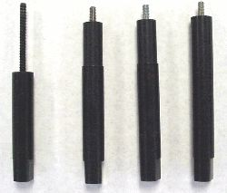
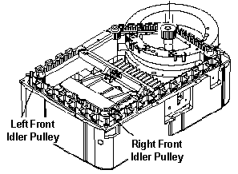
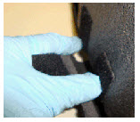
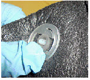
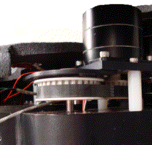
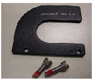
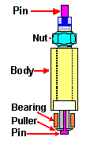
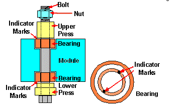
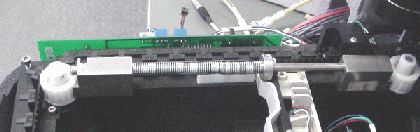
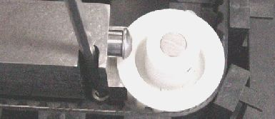

This procedure describes how to inspect and replace the bearings on the incubator belt.
Note:
Access Instruments Serial Number 402516 and higher are manufactured with internally greased full compliment bearings (1/4-in inner diameter).
Access Instruments Serial Number 401000 and lower might need to have the hole in the center rear bearing drilled out to 9/32 in for pulley shaft clearance when converting to 1/4-in inner diameter bearings. The older style bearings have an 3/16-in inner diameter.
Required Materials:
Bearing Outer Race Removal Tool — PN973002
Bearing Installation Tool — PN973010
Bearing Removal and Installation Tool — PN3639A
Analytical Module Inversion Tools — PN3405A
Perform this procedure when:
Incubator belt jams occur repeatedly with downed RVs or broken vessel holders resulting in motion errors.
Noise occurs from the incubator belt area.
Move to position out-of-range errors occur.
LumWashInc52 test fails.
Figure 6: Location of pulleys on analytical module
Prepare the analytical module.
Remove analytical module.
Remove all RVs from the rake area.
Install the analytical module inversion tools.

Insert the standoff with the most threads into the hole in the light shield and tighten the standoff.
Insert and tighten each of the remaining three standoffs into the threaded holes on the three corners of the module.
Remove the incubator belt.
Remove the clear plastic incubator cover.
Remove the light shield.
Remove all the vessel holders from the belt. If reusing the holders, then set them aside for later inspection and reassembly.
Note: The vessel holders are easier to remove where the belt wraps around the left front or right front idler pulleys.
Loosen the belt tension by loosening the left front and right front idler pulley assemblies.

Note: Do not remove the screws that secure the pulleys.
Remove the incubator belt.
If the belt will not be reinstalled, discard the belt.
Inspect the incubator belt bearings.
Note:
Inspect all the bearings before replacing any bearings.
Confirm that the incubator belt pulleys on the instrument are the same version, either all aluminum (silver) or all plastic (white). Do not operate the instrument with plastic and aluminum pulleys.
Turn the two front pulleys. Confirm that the bearings turn smoothly and freely.
Note: If the bearings do not turn freely (feel gritty or make a noise), then replace the bearings.
Turn the two rear pulleys. Confirm that each bearing turns smoothly and freely.
Note:
The two rear bearings might feel a little tighter than the front two, but the two rear bearings should feel equal to each other.
If the bearings do not turn freely (feel gritty or make a noise), then replace the bearings.
Stand the analytical module on the front end.
Caution:
Do not turn analytical module over without removing the RVs from the rake area and using the four inversion tools.
To prevent the analytical module from falling when standing it on end, always keep one hand in contact with the module.
Access the incubator drive motor.
Use the 1/8-in allen wrench to remove the two slide rails from the bottom of the analytical module.
Note: Do not discard the rail screws. The screws are reused
Remove the foam installation cover.
Caution: Do not damage the retaining clips or Velcro straps. The foam cover helps to maintain the temperature of the analytical module.
Remove the velcro straps from the side, top, and bottom.

Remove the retaining clips from both sides.

Inspect the incubator drive bearing, belt, and motor screws.
Rotate the drive bearing. Confirm that the bearing turns smoothly and freely.
Note: If the bearings do not turn freely (feel gritty or make a noise), then replace the bearings.
Confirm that the drive belt is tight.
Note: If the belt is loose, then loosen the incubator belt drive motor and tighten the belt. If the belt cannot be tightened, then replace the drive motor belt.

Check the incubator belt drive motor and confirm that the screws are secure.
Note:
If the motor screws are loose, then check the drive belt tension and tighten the motor screws.
(Optional) To replace the drive bearings, remove the drive pulley.
Remove the four screws that secure the incubator drive motor to the analytical module.
Note: Do not discard the holder brackets for the motor screws. The brackets are reused.
Use the 5/32-in allen wrench to loosen the bottom motor screws.
Remove the bottom motor screws and the holder bracket. Place the screws to the side.
Use 5/32-in allen wrench to loosen the top motor screws
Remove the top motor screws and holder bracket. Place the screws to the side.

Slide the motor toward the large pulley, and remove the drive belt from the pulley.
Remove the drive pulley from the drive shaft.
The lower drive pulley is attached to the shaft either by set-screws or pins (older instruments). Follow the step needed for the instrument.
For instruments with pins: Tap the pin out of the pulley attached to the bottom end of the drive shaft using a 3/16-in punch and a hammer.
Note: If the pin cannot be driven out, then cut or split the drive pulley and pull the pin out of the shaft.
For instruments with set-screws: Rotate the pulley to access the two set-screws securing the pulley to the shaft. Use the 5/64-in allen wrench to loosen the set-screws.
Remove the retaining ring from the drive shaft.
Note: The retaining ring is located where the shaft exits the lower bearing.
Remove the drive shaft from the top of the analytical module.
If no other bearings need to be replaced, then go to the Replace Bearings step.
(Optional) To replace any bad bearings found in the incubator belt during inspection, first remove the incubator belt pulleys as required.
Note:
Confirm that all incubator belt pulleys on the instrument are the same version, either all aluminum (silver) or all plastic (white). Do not operate the instrument with plastic and aluminum pulleys.
Perform only the procedure that is necessary for the repair on the analytical module.
If necessary, remove the front pulleys.
Remove the two screws securing the left front pulley. Discard the pulley and the screws.
Remove the two screws securing the right front pulley. Discard the pulley and the screws.
If necessary, remove the rear pulleys.
Remove the wash carousel baseplate and motor assembly from the analytical module (three screws).
Remove the retaining ring from the lower end of the left rear and center rear idler pulley shafts.
Remove the left rear and center rear idler pulley and shafts from the top of the analytical module.
Note: If the pulley assembly does not pull out of the module easily, then tap it out with a punch and a small hammer.
(Optional) If bad bearings were found and the required pulley has been removed, then replace the bearings.
Remove the bearings.
Note:
Use a 1/4-in wrench to hold the puller shaft and prevent the shaft from turning while rotating the large nut.
Place a cloth below the bearing that is being removed to catch any ball bearings that drop through the shaft hole if the bearing comes apart. Account for all 12 bearings.
If the bearing comes apart, then follow the steps to remove the outer race from the analytical module.
Assemble the bearing removal tool. Slide the puller shaft into the puller body. Mount the nut onto the puller shaft leaving enough of the puller exposed to be able to engage the back or bottom side of the bearing race.

Mount the puller over the bearing race so that the shoulders on the expansion fingers engage the back side of the race.
Insert the expansion pin into the puller shaft to spread the puller end fingers outward against the race.
Tighten the nut to extract the bearing from the module.
Loosen the nut and remove the pin and bearing from the tool.
Repeat for the remaining bearings that must be removed.
If necessary, remove the race.
Note: If the outer race broke off during removal of the bearings and the race is stuck in the analytical module, remove the race.
Note:
Use a 1/4-in wrench to hold the puller shaft and prevent it from turning while rotating the large nut.
If the tool fails to remove the bearing race, then drive the race out of the module using a hammer and screw driver.
Do not damage the aluminum module housing that surrounds the bearing race.
Remove any bearing parts remaining in the bearing seat area.
Clean the puller end and the bearing outer race with an alcohol wipe.
Assemble the race removal tool. Slide the puller shaft into the puller body. Mount the nut onto the puller shaft leaving enough of the puller exposed to be able to engage the back or bottom side of the bearing race.
Mount the puller over the bearing race so that the shoulders on the expansion fingers engage the back side of the race.
Insert the expansion pin into the puller shaft to spread the puller end fingers outward against the race.
Tighten the nut to extract the race from the module.
Loosen the nut and remove the pin and bearing race from the tool.
Repeat for any remaining races.
Install new bearings.
Inspect the bearing hole. If the bearing seat area has nicks or burrs, then attempt to remove them with fine emery cloth.
Note: The bearing seat area must be smooth and free of nicks or burrs.
Mount the bearings and the bearing installation tool onto the analytical module.
Note: Install bearings with the indicator marks facing outward.

Tighten the nut to press the bearings into the module.
Loosen the nut and remove the tool when the bearings are seated.
Repeat for all bearings being installed.
(Optional) If bearings were replaced, then install the pulleys.
Note: All incubator belt pulleys on the instrument must be the same version, either all aluminum (silver) or all plastic (white). Do not operate the instrument with plastic and aluminum pulleys.
If necessary, install the front pulley.
Install the new right front idler pulley using the new screws and washers provided.
Position the new right front idler in the middle of the front to back slotted holes and tighten the mounting screws.
Install the new left front idler pulley, loosely.
Note: Do not tighten the left front idler pulley. The pulley is tightened when the incubator belt is installed.
If necessary, install the rear pulleys.
Insert the idler pulley shaft into the bearings and install a retaining ring onto the pulley shaft.
Note: Gently tap the pulley through the bearings if necessary.
Manually rotate the pulley to confirm that it turns freely.
If necessary, install the drive pulley.
Insert the drive pulley into the right rear bearings and attach the retaining ring to the drive shaft.
Note: The retaining ring is located where the shaft exits the lower bearing.
Using a marker, draw a line on the end of the pulley shaft to indicate location of the set-screw.
Slide the drive pulley onto the shaft and align the set-screw location with the line draw on the end of the shaft.
Install and tighten one set-screw to secure the pulley. Rotate the shaft and install and tighten the second set- screw.
Manually rotate the pulley to confirm that it turns freely.
Install the drive belt onto the motor and drive pulley. Tension the belt by pulling the motor away from the drive pulley and tightening the motor mounting screws.
If bad bearings were found and replaced, continue with the steps in this procedure to install and tension the belt, add the vessel holders, and calibrate the belt.
Install the belt over the pulleys with the belt teeth facing inward and the belt clip dovetails facing outward.
Tension the incubator belt.
Set the right front pulley to the mid-travel position, and then tighten both of the mounting screws.
Note: Locate the mid-travel position of the right front pulley by moving the pulley forward and then backward.
Confirm that the left front pulley is loose. If the pulley is not loose, then loosen the two screws that secure the pulley.
Insert the tensioning tool against the left rear pulley. Confirm that the tool is placed firmly on the pulley teeth.
Note: The end of the tensioning tool with the hole goes toward the left front pulley.
Push the tool against the rear pulley, compressing the spring on the tensioning tool. Seat the other end of the tool against the teeth of the left front pulley.

Insert a hex wrench through the slot in the block of the tensioning tool, and then tighten the mounting screw for the left front pulley.

Remove the tensioning tool.
Install the vessel holders onto the incubator belt.
Align and install the vessel holders on the incubator belt dovetails by pressing them down.
Note:
The vessel holders are easier to install where the belt wraps around the left front or right front idler pulleys
Confirm that only one home vessel holder is installed. The home vessel holder has a magnet glued on top of it.
Once all the vessel holders are installed, confirm that all the holders fit below the index sensor by slowly turning the incubator belt clockwise for one revolution.
Confirm that all the holders fit below the index sensor by slowly turning the incubator belt counter-clockwise for one revolution.